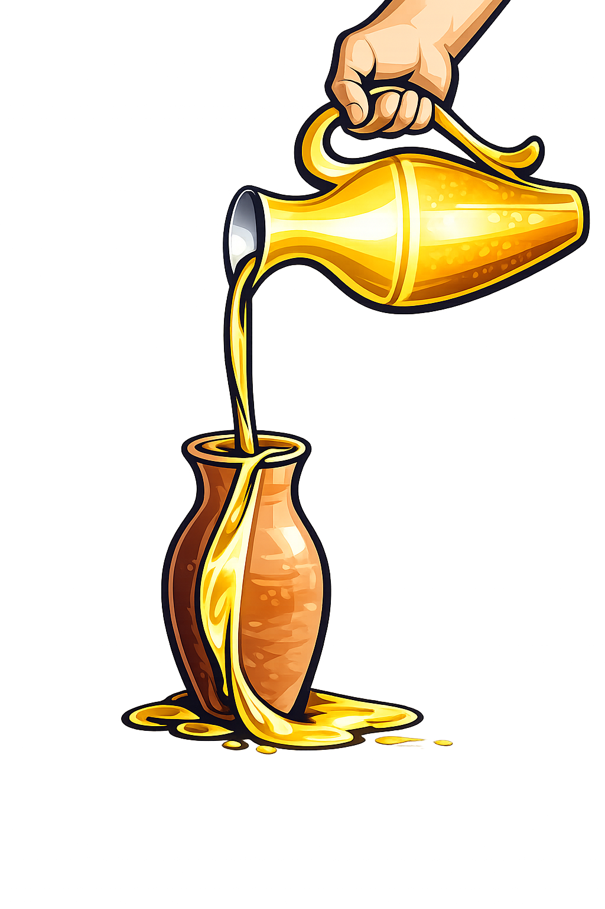

Sua atividade por aqui
Continue de onde parou
Sua caminhada com a Palavra
Acompanhe seu ritmo devocional e veja como sua constância tem crescido.
Versículo surpresa
Só um toque para receber uma palavra agora.
Continue o estudo
Versículos favoritos recentes
Bíblia Sagrada
Navegue por livro e capítulo. Toque em um versículo para favoritar, anotar ou compartilhar.
Perguntar à IA
Tire dúvidas, peça explicações de versículos ou gere um devocional — tudo fundamentado nas Escrituras.

Devocional de hoje
Minhas anotações de hoje
Meu registro devocional
Planos de leitura
Escolha um plano guiado ou monte o seu próprio ritmo de leitura.
Monte seu plano personalizado
Escolha o que ler e o ritmo — organizamos o roteiro completo, dia a dia, para você.
💡 Como funciona
Escolha um recorte da Bíblia — pode ser tudo, só um Testamento, os Evangelhos, as Cartas ou Salmos & Provérbios. Depois, decida se prefere informar quantos dias você tem disponíveis (calculamos os capítulos por dia) ou quantos capítulos por dia você consegue ler (calculamos em quantos dias termina).
Ao gerar, você recebe um roteiro dia a dia — igual aos planos guiados — com checklist de progresso, agrupado por semanas, para acompanhar exatamente o que ler a cada dia até bater sua meta.
Estudos bíblicos
Personagens, livros, parábolas, milagres, profecias e o contexto histórico das Escrituras.
Minhas anotações
Reflexões organizadas por livro, capítulo ou tema.
Criar novo bloco de notas
Favoritos
Versículos, capítulos, devocionais e estudos que você guardou no coração.
Oração
Registre seu pedido de oração para a dirações da igreja, assim que for visualizado ou respondida, seu pedido aparecerá na aba de respondidas .
Pedidos ativos
Orações respondidas
Quiz bíblico
Teste seu conhecimento das Escrituras. Sua pontuação é por sessão: ao sair desta tela, tudo reinicia.
Conquistas do quiz
Campanhas Proféticas
Acompanhe a campanha atual da igreja e reviva as jornadas espirituais que já caminhamos juntos.
Campanhas anteriores
Conversas
Converse com outros membros e compartilhe versículos. Adicione alguém pelo nome de exibição para começar.
Suas conversas
Selecione um contato ao lado para começar.
Mural da Comunidade IPDF
"Alegrai-vos com os que se alegram e chorai com os que choram." — Romanos 12:15
Canais de Conversa
Tópicos do Fórum
Mais recente atividade
Membros Online
Próximos Cultos
Aniversariantes do Mês
Biblioteca multimídia
Áudios da Bíblia, vídeos educativos, louvores e podcasts cristãos — assista e ouça direto aqui no site.
Minha conta
Gerencie seu perfil, segurança e preferências dentro do IPDF.